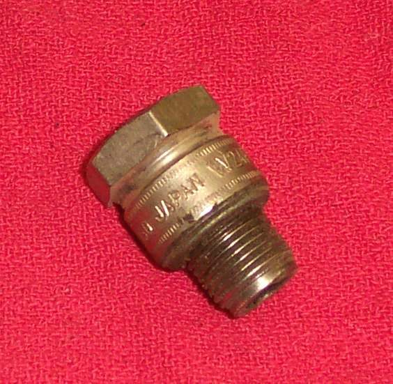

A piston can rust or seize to the cylinder wall, most often on an engine that has stood for a long time. When penetrating oil and gentle turning do not free it, a grease gun can push the piston out with steady hydraulic pressure. This is the last step before taking the engine apart. It is a workshop job, because the valves, cams and cylinder head can all be affected.
Safety
- Wear safety glasses. Grease under pressure can spray or push parts out.
- Do not force the crankshaft with a long bar or kick the starter harder. Parts will break.
- Welding the tool and removing a cam chain are skilled jobs. Leave them to a workshop if you are unsure.
- A bike that has locked while riding may have damage inside. Do not ride it again before it is checked.
First, find what is stuck
- Put the bike in neutral and push it. If it rolls, the rear brake, chain and gearbox output are free.
- Select top gear and push again. If the engine turns, the fault is in the kickstart or electric start gears: Find out where a stuck engine is locked.
- Remove a side cover and try to turn the crankshaft bolt with a spanner. If it turns, the piston and crank are free.
- If it will not turn, pull the clutch lever and try again. If it now turns, the fault is in the gearbox or clutch.
- If it still will not turn, the piston is the likely cause.
Free the piston
- Put penetrating oil in the spark plug hole and leave it to soak, overnight if possible.
- Work a spanner on the crankshaft bolt gently back and forth. Stop if you feel it will not move.
- Make the tool: cut the top of an old spark plug off and knock out the porcelain, so only the steel body with its thread is left. Fix a pipe fitting that suits a grease gun to the top of the body. Welding is the usual method.
- Prepare a four-stroke. The valves must be closed, and the engine cannot be turned to close them. Remove the camshafts or rocker arms. If the cam chain has to be cut, it needs a master link to be joined again: Join a chain with a clip, press-fit or rivet link. A stuck or bent valve means the head must come off.
- A two-stroke has ports, not valves. Pressure is lost as soon as the piston uncovers the ports, so the piston only moves a short way.
- Screw the tool into the plug hole and connect the grease gun.
- Pump slowly. The grease pushes the piston down the bore.
- On a two-stroke, once the piston moves, pull the cylinder off the rest of the way.
After it moves
- A piston freed easily does not mean the engine is healthy. Expect damage to the bore and rings.
- If the engine runs, check the oil soon for fine metal and grit: Inspect drained oil for clues.
- Most engines need a rebore, a new piston and new rings: Measure piston-to-cylinder clearance and bore wear.
When to go to a workshop
- The piston is stuck below the ports on a two-stroke.
- A valve is bent or stuck open.
- You cannot weld the tool or remove the cams safely.
- The crankshaft or gearbox is also locked.